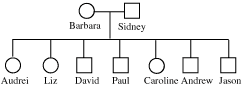

Color Blindness Problem Set
This problem set is based on a question received from a woman named Audrei. Audrei is red-green color blind and so are other members of her family. She wanted to know if we could help her understand how she inherited her color blindness.
Audrei's family| There are 7 children in Audrei's family, three girls and four boys. Two of the girls, Audrei and Liz, are red-green color blind. Caroline has normal color vision. Only two of the boys have been tested. Paul is color blind and David has normal color perception. Andrew and Jason, who have not been tested, may or may not have normal color perception.
 Barbara, the mother of the seven children, has normal color vision, but Sidney, the father, has the red-green color perception defect. Audrei also has a half brother Stephan. Audrei and Stephan have the same mother, but a different father. Stephan is also red green color blind. |
| Red-green color blindness is an X-linked, recessive trait. In this problem set we will establish the pedigree of Audrei's family and see how the color perception defect is passed on from one generation to the next, but first let's look at a brief introduction to sex-linked inheritance. For more complete information about sex-linked inheritance review the Sex-linked Inheritance Problem Set in the Mendelian Genetics section. |


The Biology Project
University of Arizona
Saturday, October 10, 1998
Contact the Development Team
http://www.biology.arizona.edu
All contents copyright © 1998. All rights reserved.